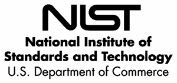

About
Per the guidance of the Office of the National Coordinator for Health Information Technology (ONC), NIST has developed this tool to test the transport and content-related standards from the ONC S&CC 2014 certification criteria.
Tool Contents
Specifically, this tool, known as the Transport Testing Tool (TTT), will in its final version (no released yet) test for:
- Direct (S/MIME),
- Simple Object Access Protocol (SOAP),
- XDM for Direct transport standards,
- CCDA-based content.
This tool uses MDHT validation to test CCDA document conformance with the applicable Document, Section, Entry Templates specified in the CCDA Implementation Guide. The MDHT validation will allow the tool to provide intuitive validation results to the users which identify the XML snippets that do not conform to the CCDA specification. The results will also display errors and/or warnings along with the conformance statement that is not being met by the CCDA document.
Certification Bodies will validate EHR module achievement of several ONC S&CC 2014 Edition Objectives (described in our user documentation) using this tool, specifically their ability to send and receive messages and CCDA attachments.
NIST / ONC collaboration
The National Institute of Standards and Technology (NIST) is the federal technology agency that works with industry to develop and apply technology, measurements, and standards. Under the American Recovery and Reinvestment Act of 2009, NIST was called upon to consult the Office of the National Coordinator (ONC) for Health IT in a mission to encourage greater adoption of interoperable health information technology.
In order to accomplish this mission, NIST is collaborating with ONC to define a program for the voluntary certification of health information technology as being in compliance with applicable certification criteria to meet defined Meaningful Use (MU) 2 requirements. Practically speaking, it includes developing the necessary functional and conformance testing requirements, test cases, and test tools in support of the health IT certification program.
